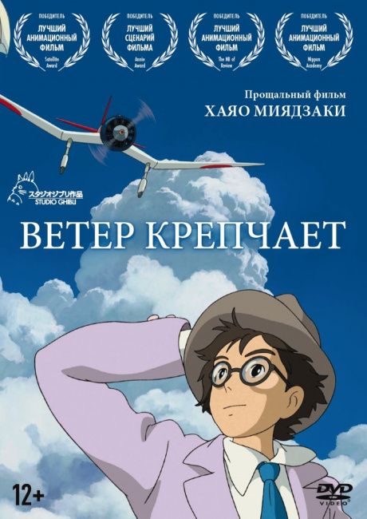

Ветер крепчает

Характеристики:
- Категория: Аниме
- Жанр: Драма, Повседневность и Романтика
- Год выпуска: 2013
- Студия: Studio Ghibli
- Режиссер: Хаяо Миядзаки
- Автор оригинала: Хаяо Миядзаки
Описание
Мальчик Дзиро мечтает о полетах и красивых самолетах, способных обогнать ветер. Вот только пилотом ему не стать — он с рождения близорук. Но Дзиро не расстается с мечтой о небе, он начинает придумывать идеальный самолет и со временем становится одним из лучших авиаконструкторов мира. На пути к успеху он не только встретит много интересных людей, переживет Великое землетрясение в Токио и жестокие войны, но и обретет любовь своей жизни — прекрасную Наоко.